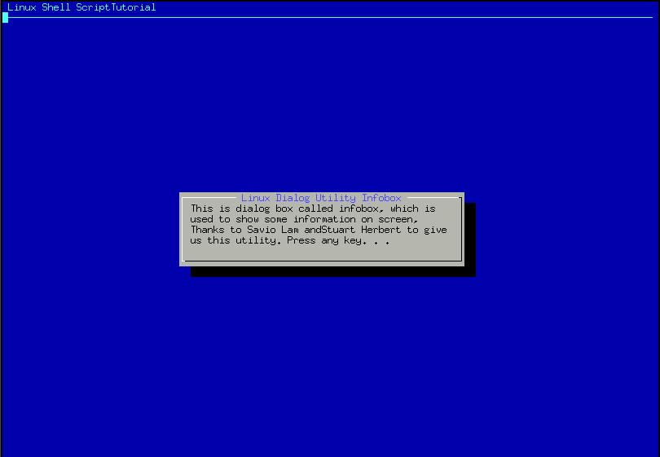

| Linux Shell Scripting Tutorial (LSST) v1.05r3 | ||
| Chapter 4: Advanced Shell Scripting Commands | ||
| | ||
Before programming using dialog utility you need to install the dialog utility, since dialog utility in not installed by default.
For Red Hat Linux 6.2 user install the dialog utility as follows (First insert Red Hat Linux 6.2 CD into CDROM drive)
# mount /mnt/cdrom |
For Red Hat Linux 7.2 user install the dialog utility as follows (First insert Red Hat Linux 7.2 # 1 CD into CDROM drive)
# mount /mnt/cdrom |
After installation you can start to use dialog utility. Before understanding the syntax of dialog utility try the following script:
$ cat > dia1 |
Save the shell script and run it as:
$ chmod +x dia1
$ ./dia1

After
executing this dialog statement you will see box on screen with titled
as "Welcome to Linux Dialog Utility" and message "This is
dialog....Press any key. . ." inside this box. The title of box is
specified by --title option and infobox with --infobox "Message" with
this option. Here 7 and 50 are height-of-box and width-of-box
respectively. "Linux Shell Script Tutorial" is the backtitle of dialog
show on upper left side of screen and below that line is drawn. Use
dialog utility to Display dialog boxes from shell scripts.
Syntax:
dialog --title {title} --backtitle {backtitle} {Box options}
where Box options can be any one of following
--yesno {text} {height} {width}
--msgbox {text} {height} {width}
--infobox {text} {height} {width}
--inputbox {text} {height} {width} [{init}]
--textbox {file} {height} {width}
--menu {text} {height} {width} {menu} {height} {tag1} item1}...
| | ||
| User Interface and dialog utility-Part I | Message Box (msgbox) using dialog utility | |